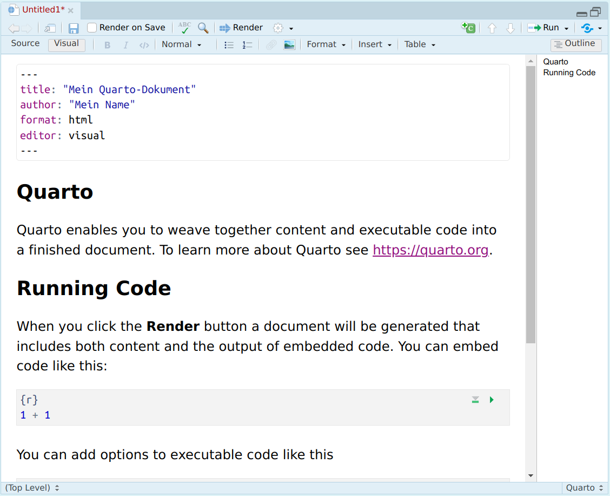
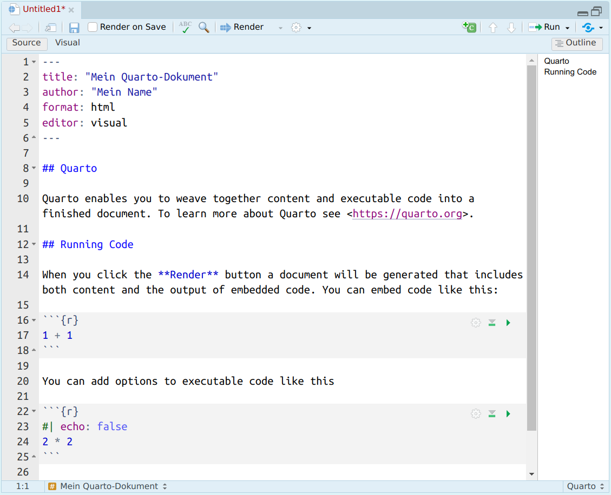
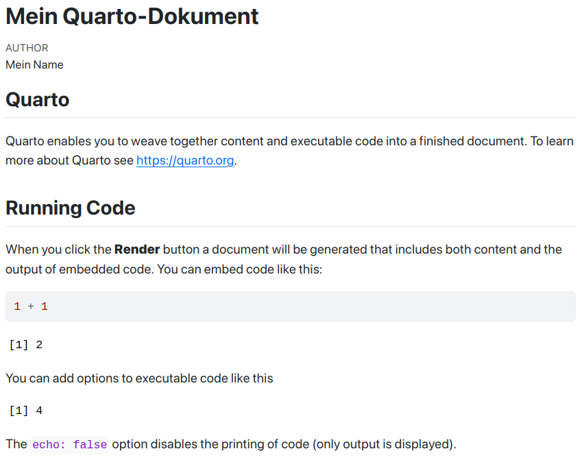
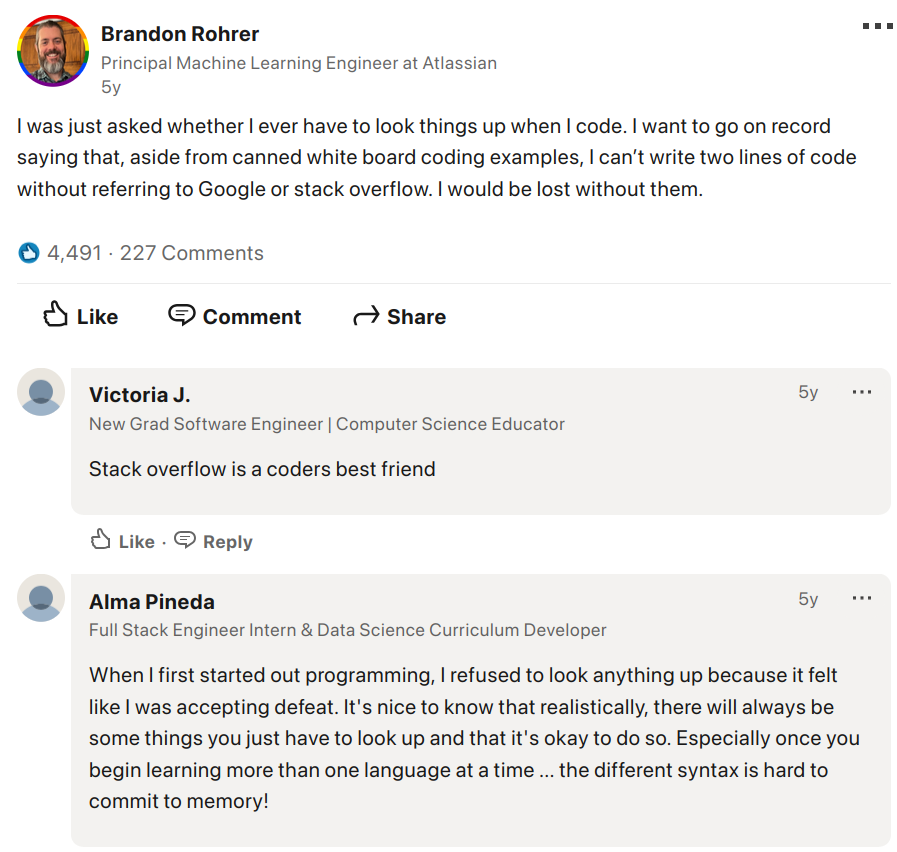

2 Workflow
Bevor wir mit der Nutzung von R beginnen, möchten wir die Software und ihre Möglichkeiten besser kennenlernen sowie einige Ressourcen kennenlernen, die uns bei offenen Fragen zur Verfügung stehen.
In diesem Kapitel lernen wir…
- …in welchem Umfeld wir R – unter Rückgriff auf RStudio – nutzen.
- …wie wir unsere Arbeitsschritte mit einfachen Skripten und umfangreicheren Quarto-Dokumenten dokumentieren.
- …wie wir mit Fehlern umgehen und selbst auf die Suche nach Lösungen gehen.
2.1 RStudio
Nach der erfolgreichen Installation ist der nächste Schritt, die Umgebung von RStudio einführend kennenzulernen, weil dessen unzählige Schaltflächen und Menüs zu Beginn überfordernd wirken können. Im Verlauf des Kurses werden wir uns mit den Funktionalitäten dann eingehender beschäftigen.
Zuvor sei darauf hingewiesen, dass in allen vier Hauptfenstern von RStudio Nutzungsmöglichkeiten versteckt sind, die Eingaben über die Kommandozeile zugunsten einer grafischen Benutzeroberfläche (graphical user interface, kurz GUI) ablösen – das heißt aber nicht, dass die Arbeit mit der Kommandozeile überflüssig gemacht wird, sie wird lediglich unterstützt.
Die Standardeinteilung der RStudio-Oberfläche zeigt vier Fenster (panes) an:
2.1.1 Console
Auch Konsole oder Kommandozeile genannt: Hier “lebt” R. Sämtliche Eingaben in das Programm werden hier, hinter der Eingabeaufforderung > getätigt. Wenn es im Verlauf des Kurses heißt, dass Sie etwas eingeben oder ausführen lassen sollen, damit die Konsole gemeint. Rechts vom R-Logo wird die installiert R-Version (hier 4.2.0) sowie das derzeit genutzte Verzeichnis (hier ~/rstudio-user-guide/) angezeigt.
2.1.2 Source
Auch Quelle oder Skript-Editor genannt: Hier können wir R-Code in einer Datei mit der Endung .R schreiben und abspeichern. Neue Skripte können wir in der Menüleiste über File → New File → R Script oder über die Schaltfläche darunter ebenso wie über die Tastenkombination Strg+Shift+N erstellen. Während wir Eingaben in der Konsole nur mithilfe zusätzlicher Schritte wieder aufrufen können, ist das Verfassen von Skripten eine sichere Art, den eigenen Fortschritt nicht mit Beenden des Programms einzubüßen. Außerdem liefert der Skript-Editor noch zahlreiche weitere Hilfestellungen: zum Beispiel färbt er den Code gemäß bestimmter (von uns noch kennenzulernenden) Regeln ein und macht ihn dadurch lesbarer, während er links neben dem Code oftmals schon Hinweise auf mögliche Fehler gibt.
2.1.3 Environment
Auch Umgebung genannt: Hier wird eine Übersicht über sämtliche Objekte gegeben, die im Rahmen einer R-Sitzung erzeugt worden sind (hier: ein gg-Objekt namens mpg_plot). Die Summe alle dessen, was wir erzeugen, wird auch als workspace (zu deutsch etwa “Arbeitsplatz”) bezeichnet. Mit der Besen-Schaltfläche können wir den gesamten workspace leeren, also alle erzeugten Objekte entfernen. Die MiB-Anzeige1 zeigt uns an, wieviel Arbeitsspeicher des Rechners derzeit genutzt wird. Hinter dem Reiter History verstecken sich alle bisher getätigten Eingaben.
2.1.4 Output
Auch Ergebnisse genannt: Hier verbirgt sich hinter dem Reiter Files ein Dateimanager, der die im jeweiligen Arbeitsverzeichnis (oder anderswo) liegenden Dateien anzeigt und uns erlaubt, Ordner anzulegen, umzubenennen oder zu löschen. Mit der Zahnrad-Schaltfläche können wir weitere Dateipfad-Operationen vornehmen, wie etwa eine Veränderung des Arbeitsverzeichnisses. Hinter dem Reiter Plots verbirgt sich eine Anzeige, die die jeweils erzeugten Grafiken darstellt, während Packages eine Übersicht der installierten Pakete bietet und Help die Hilfeseiten bestimmter Pakete oder Funktionen von Rdocumentation anzeigt.
2.2 Sitzungen
Wie oben erwähnt, findet die Nutzung von R innerhalb sog. sessions, also Sitzungen, statt. Jedes Mal, wenn R bzw. RStudio gestartet wird, beginnt eine neue Sitzung. Jeder Code, der eingegeben wird, jedes Ergebnis, das erzeugt wird, kurzum jegliche Arbeitsschritte existieren nur im Rahmen dieser Sitzung. Wir können eine Sitzung mit Session → Quit Session in der Menüleiste, mit der Tastenkombination Strg+Q, mit der Konsoleneingabe q() oder durch das schlichten Schließen von RStudio beenden.
Bei jedem Beenden fragt R bzw. RStudio uns, ob das workspace image gespeichert werden soll. Wir können dies mit Save bestätigen, mit Don't Save verneinen oder das Beenden mit Cancel abbrechen und zur Programmnutzung zurückkehren.
Wenn wir diesen Schritt bejahen, speichert R eine Datei mit der Endung .Rdata im jeweiligen Arbeitsverzeichnis ab, die sämtliche erzeugten Objekte so enthält, dass sie in der folgenden Sitzung wieder in der Umgebung zur Verfügung stehen würden. Das kann, muss aber nicht nützlich sein (etwa, wenn große Datenmengen einmalig eingelesen werden müssen und dieser Schritt nicht jedes Mal wiederholt werden soll).
Für diesen Kurs bitte ich Sie, ihren workspace nicht jedes Mal zu speichern.
2.3 Dokumentation
Wenn wir unseren workspace nicht immer speichern wollen, um unsere Fortschritte festzuhalten, haben wir zwei Möglichkeiten, den Code, den wir schreiben, zu dokumentieren und reproduzieren zu können. Dabei sollten wir stets bedenken, dass wir unsere Arbeitsschritte so dokumentieren, dass sie uns selbst in der Zukunft helfen, zu verstehen, was wir getan haben. Darüber hinaus ist gute Dokumentation wichtig, um uns mit Anderen über unsere Arbeit austauschen zu können.
2.3.1 Skripte
Die einfachste Art, R-Code zu dokumentieren, ist, für zusammenhängende Schritte ein Skript zu schreiben. Der Ort, dies zu tun, ist der Skript-Editor(Kapitel 2.1.2) in RStudio. Einmal verfasst, können wir Code auf zwei Weisen ausführen:
- Wenn der Cursor sich an einer Stelle im Code befindet oder der entsprechende Code mit der Maus markiert wurde, können wir ihn mit Strg+Enter ausführen.
- Alternativ können wir in der kleinen Leiste im Skript-Editor auf
Runklicken. Das Dropdown-Menü ermöglicht noch weitere Schritte, etwa das Ausführen von Code-Chunk nach Code-Chunk.
2.3.2 Quarto
Die fortgeschrittene Variante, R-Code zu dokumentieren, ist die Verbindung von formattiertem Text, Abbildungen, Code und Output in einem sog. Markdown-Dokument. Dabei handelt es sich um ein Textdokument, in das man Code “einbetten” kann. Das heißt, der Code, wie er in R-Skripten geschrieben wird, ist nur ein Teil des Inhalts, das Dokument kann daneben auch andere Informationen enthalten. Was ehemals mit einem Paket namens rmarkdown erledigt wurde, wird zunehmend von dessen “Nachfolger” Quarto erledigt. Tatsächlich wurde dieses gesamte Skript mit Quarto geschrieben!
Um ein neues Quarto-Dokument zu beginnen, nutzen wir in RStudio die Auswahl File → New File → Quarto Document. Im sich öffnenden Dialog können wir auswählen, ob wir ein Dokument (Document), eine Präsentation (Presentation) oder eine interaktive Anwendung (Interactive) erzeugen wollen. Ein Dokument ist für unsere Zwecke meist das, was wir nutzen möchten. Desweiteren können wir unserem Dokument einen Titel (Title) geben und unseren Namen als Verfasser*in (Author) angeben. Standardmäßig ist ein HTML-Dokument als Format gewählt, mit Quarto können aber auch Dokumente im PDF- oder Word-Format erzeugt werden.2 Sobald wir den Dialog bestätigt haben, öffnet sich unser Quarto-Dokument im Source-Fenster von RStudio mit einem Beispieltext.

Visual-Ansicht.Den sich uns präsentierenden Inhalt können wir auf zwei Arten betrachten, zwischen denen wir oben links wechseln können. In der visuellen (Visual) Form können wir den Inhalt in einem Editor bearbeiten, der ähnlich wie MS Word oder LibreOffice aussieht, während der zugrundeliegende Code (Source) uns denselben Inhalt im sog. markup-Stil anzeigt. Um den Aufbau solcher Dokumente besser verstehen zu können, ist es empfehlenswert, sich mit dem Source-Inhalt stärker auseinanderzusetzen.

Source-Ansicht.Zuoberst eines Quarto-Dokuments steht die sog. Kopfzeile (header), indem für das grundlegende Optionen eingestellt werden wie Title, Verfasser*in, das Format und vieles mehr. Die Optionen sind zu zahlreich, um sie einzeln durchzugehen, weshalb ein Blick in die Quarto-Dokumentation immer nützlich ist.
Quarto-Dokumente können auch den Inhalt betreffend sehr ausfeilt sein. Für den Anfang genügt es uns aber, die folgenden grundlegenden markup-Formattierungen zu kennen:
- Überschriften: Mit
#(Rautezeichen/hashtag) können wir unseren Text strukturieren, wobei#für die erste Ebene##für die zweite Ebene,###für die dritte Ebene usw. steht. - Hervorgehobener Text: Mit
*Text*(einfacher Asterisk) lässt sich ein Wort kursiv, mit**Text**(doppelter Asterisk) fett hervorheben. - Code-Format: Mit `Text` (sog. backticks) lässt sich ein Wort als
Codeformatieren. - Code-Block/code chunk: Mit ``` (dreifachen backticks) in jeweils zwei Zeilen können wir zwischen Text und anderen Elementen auch R-Code schreiben (ganz so, wie wir es in der Konsole tun würden), den wir mit den üblichen Tastaturkombinationen bzw. Schaltflächen ausführen können. Wichtig ist, dass in der ersten Zeile nach ``` ein
{r}eingegeben wird, damit RStudio weiß, dass es sich hierbei um auszuführenden R-Code handelt. - Code-Ergebnis: Mit
`r `können wir in unserem Text auf eine Berechnung zurückgreifen.`r 2 + 2`ergibt also 4.
Um aus dem Inhalt ein endgültiges Dokument zu erzeugen, klicken wir auf Render (zu deutsch etwa “machen” oder “ausführen”). RStudio fragt uns daraufhin, wo wir unseren Code abspeichern wollen und erzeugt, nachdem wir einen Namen und ein Verzeichnis abgegeben haben, ein Dokument mit der Endung *.qmd (quarto markdown document). Aus diesem Dokument wird dann ein HTML-Dokument im angegebenen Verzeichnis erzeugt. Dieses Dokument können wir mit jedem gängigen Browser öffnen.

Mit diesen grundlegenden Fertigkeiten können wir die unsere Antworten zu den Übungsaufgaben in einem ansprechenden und nachvollziehbaren Format verfassen. Eine weiterführende Einleitung in Quarto bieten Wickham, Çetinkaya-Rundel, und Grolemund (2023, Kap. 28).
Prüfungsleistung
Für die Abgabe ist die Ausarbeitung einer eigenen Datenauswertung in Form eines Quarto-Dokuments gefragt. Es lohnt sich für Sie also, frühzeitig im Rahmen des Kurses Notizen und Übungsaufgaben schrittweise in dieser Form festzuhalten bzw. zu bearbeiten. Eine ausführlichere Einführung in die Nutzung von Quarto liefert dieses ausführliche Tutorial.
2.4 Hilfe und Selbsthilfe
2.4.1 Fehler erkennen
Eine Programmiersprache zu erlernen und später zu benutzen geht nicht, ohne beständig Inhalte nachzuschlagen, Probleme zu erkennen und Alternativen auszuprobieren. Fehlermeldungen zu erhalten ist deshalb eine völlig normale, wenn auch gerade zu Beginn leicht frustrierende, Erfahrung.
Wenn wir R-Code schreiben, tun wir dies idealerweise in einer neuen Datei im Skript-Fenster von RStudio. Sobald wir dort etwa Tippfehler begehen, auf nicht existierende Objekte verweisen o.ä. (mehr dazu später), erscheinen bereits am linken Rand Warnhinweise, die uns genauere Hinweise auf eventuell fehlerhaften Code geben.
Sollten wir unseren Code zwar fehlerfrei geschrieben haben, aber Problemen beim Ausführen begegnen, liefert R im Vergleich zu vielen anderen Programmiersprachen vergleichsweise detaillierte Fehlermeldungen. Manchmal enthalten diese Meldungen sogar bereits Vorschläge zur Lösung. Sollten Sie diese Fehlermeldungen nicht verstehen, was gerade zu Anfang völlig normal ist, hilft es, in die R-Dokumentation zu schauen oder eine eigene Internetsuche vorzunehmen.
Nachdem Sie selbst versucht haben, den Fehler zu verstehen und zu beheben, können Sie mich in den Kurssitzungen natürlich jederzeit um Unterstützung bitten. Lassen Sie es nicht zum Äußersten kommen!

2.4.2 R-Dokumentation
Sollten wir eine Frage dazu haben, wie eine bestimmte Funktion genutzt wird, können wir Rs Hilfeseiten nutzen. Diese können wir entweder über ein Fragezeichen, gefolgt von der fraglichen Funktion aufrufen (z.B. ?sum()) oder indem wir den Funktionsnamen in die help()-Funktion eingeben (z.B. help(sum)).
Für “ältere” (d.h., vor allem für base R) packages kann mit dem Namen einer Funktion in doppelten Anführungszeichen ("") durch example() (z.B. example("data.frame")) in vielen Fällen eine Reihe an Beispielen in der Konsole aufgerufen werden.
Insbesondere jüngere und populäre packages (wie das von uns noch kennenzulernende tidyverse) bieten zudem sog. Vignetten an. Dabei handelt es sich um illustrierte Kurzanleitungen mit möglichst zugänglichen Beispielen. Diese können wir über die vignette()-Funktion aufrufen (z.B. vignette('ggplot2'), um die Vignette des Grafikpaketes ggplot2, das Bestandteil des tidyverse ist, aufzurufen).
2.4.3 Internetsuche
Sobald wir ein Problem möglichst präzise, idealerweise auf Englisch, beschreiben (oder eine entsprechende Fehlermeldung kopieren) können, ist es ratsam, eine Suchmaschine heranzuziehen. Um sicherzugehen, dass wir nur R-elevante Ergebnisse angezeigt bekommen, lohnt es sich, der Suchanfrage ein R voranzustellen. Das gilt für Einsteiger*innen wie für Expert*innen gleichermaßen, wie dieser LinkedIn-Beitrag eines renommierten Ingenieurs beschreibt:

2.4.4 StackOverflow
In vielen Fällen werden die ersten Ergebnisse einer Suchanfrage uns auf StackOverflow führen, dem aktivsten Onlineforum für Programmierer*innen und Entwickler*innen. Wir finden hier Unmengen an meist gut moderierten Diskussionen, die oft Code-Beispiele und Hinweise auf nützliches Material enthalten. Es ist hochwahrscheinlich, dass wir hier ein wenigstens möglichst verwandtes Problem samt Lösung finden. Und falls nicht, können wir jederzeit einen Account erstellen selbst eine Frage stellen!
2.4.5 Cheatsheets
Die Entwickler*innen von RStudio, Posit, haben gemeinsam mit Nutzer*innen eine Reihe sog. cheatsheets (zu deutsch etwa “Schummelzettel”) erarbeitet. Dabei handelt es sich um ein- bis zweiseitige Dokumente, die die wichtigsten Funktionen bestimmter Pakete erklären und bei der eigenen Arbeit nützlich zum Nachschauen sein können. Teilweise wurden diese cheatsheets auch ins Deutsche übersetzt. Manche, jedoch leider nicht alle, der (englischsprachigen) cheatsheets finden Sie über Help → Cheat Sheets.
Für den Verlauf des Kurses empfehle ich Ihnen, die folgenden cheatsheets herunterzuladen und in ihrem Kursverzeichnis als Arbeitsmaterial abzulegen (erstellen Sie hierfür am besten einen neuen Ordner namens Ressourcen):
- Anfangen, mit R zu arbeiten (englisch)
- Arbeiten mit RStudio (englisch)
- Dokumentation mit Quarto (englisch) und mit RMarkdown (englisch, deutsch)
- Grundlegende Funktionen mit
base R(deutsch) - Datenbereinigung mit
tidyr(englisch) - Datenimport mit
readr(englisch) - Datentransformation mit
dplyr(deutsch, englisch) - Datenvisualisierung mit
ggplot2(deutsch, englisch) - Stringbearbeitung mit
stringr(englisch) - Geodatenbearbeitung im Vektorformat mit
sf(englisch)
2.4.6 Chat-GPT und Co.
In der jüngeren Vergangenheit hat die Verwendung von generativer künstlicher Intelligenz (generative artificial intelligence, kurz GenAI) stark zugenommen, denn scheinbar bieten Chatbots wie ChatGPT bei allen Anliegen eine Antwort. Das Verfassen von R-Code stellt dabei keine Ausnahme dar. Daraus folgt jedoch nicht, dass es sich nicht lohnen würde, R selbst zu lernen und sich stattdessen mit von Chatbots generierten Codeblöcken aushelfen zu lassen. Tatsächlich möchte ich Sie in diesem Kurs darum bitten, die Verwendung von ChatGPT und Co. stark zu begrenzen oder, besser noch, idealerweise gar keine Chatbots zu nutzen.
Diese Empfehlung hat vier Gründe:
- Sie lernen R schlechter. Der Umgang mit Fehlermeldungen, dem Formulieren eigens gewünschter Datenverarbeitungsschritte und dem Verfassen von Code sind allesamt wichtige Fähigkeiten, die es sich zu erarbeiten lohnt. Wer sich von GenAI bei all diesen Problemen helfen oder sich ihre Bearbeitung gänzlich abnehmen lässt, läuft Gefahr, eine Sprache wie R nicht zu lernen, sondern durch alle sich bietenden Abkürzungen weitgehend auf einem niedrigen Lernniveau zu verharren.
- Die KI kann wenig hilfreiche Ergebnisse liefern. GenAI-Tools erstellen – wenigstens ohne präzise Eingabeaufforderungen (prompts) – regelmäßig R-Code, der Funktionen und Pakete nutzt, mit denen der User nicht vertraut ist. Gerade zu Beginn ist es aber sinnvoll, sich vorrangig mit solchen Funktionen, die zum Lehrumfang gehören, zu beschäftigen, um diese zu verinnerlichen, bevor man selbstständig neue Funktionalitäten recherchiert und zu anzuwenden lernt.
- Die KI kann falsche Ergebnisse liefern (Lenzen 2024). Es kann vorkommen, dass GenAI-Tools nicht funktionierenden Code verfassen und trotz anderslautender Prompts Probleme nicht korrigieren. Nur, wer eine Sprache wir R lernt, ist mit der Zeit in der Lage, diese Schwierigkeiten zu erkennen – und selbst zu verbessern.
- Die ökologischen Kosten (vor allem der Wasser- und Energieverbrauch) von GenAI-Tools sind immens (Meysenburg 2024; Parshley 2024). Folglich sollten wir die Funktionalitäten von KI nicht leichtfertig oder aus falscher Bequemlichkeit nutzen. Eine Suchmaschinenabfrage zu einem bestimmten R-Problem wie einer Fehlermeldung oder dem Syntax einer gewünschten Funktion ist bedeutend sparsamer.